作例と設定値
5枚の写真に、表の項目だけを変えて適用した15の作例です。表にない項目はデフォルトのままです。画像の境目を左右に動かすと、素材と見比べられます。
デフォルトの値は、適用量100%、利得100%、線形光オフ、ハイライト閾値95%、ハイライト強度1倍、ディザオフ、色の扱い単色、波長550nm、F値8、画素ピッチ4μm、カーネル半径15画素、品質標準、開口形状円形、羽根枚数6、開口回転0°、中央遮蔽0%、波面収差の6項目はすべて0 wavesです。
素材は、夜の川沿い、色つきの電球、天使の形の電飾、黄色い花、朝露の写真です。出典は確かめ方のページにあります。画像は、写真を切り出して、波動光学のCPUの経路の計算をそのまま呼び出して適用し、縁を削って載せたものです。YMM4の画面ではありません。GPUの経路とは1ビット単位では一致せず、差は測った範囲で最大2階調でした。にじみの大きさは画素を単位に決まるので、素材の解像度が違うと見え方も変わります。花と朝露の写真は解像度が低いので、元の大きさのまま一部を載せています。
目次
- 光条を出す
- 玉ボケにする
- 収差を使う
- 色の扱いを使う
1. 光源から星形の光条を出す
羽根枚数6の開口で、光源から6本の光条を出します。


| 項目 | 値 |
|---|---|
| F値 | 16 |
| 画素ピッチ | 4μm |
| カーネル半径 | 63画素 |
| 開口形状 | 正多角形 |
| 線形光 | オン |
| ハイライト閾値 | 97% |
| ハイライト強度 | 25倍 |
光条が出るのは、開口形状を正多角形にしているためです。羽根枚数はデフォルトの6枚で、偶数なので光条は6本になります。光条の光は弱いので、線形光をオンにして、ハイライト強度で光源を持ち上げています。持ち上がるのはしきい値の97%を超える画素だけで、暗い部分の見え方は変わりません。窓の明かりが並ぶ部分では、光条が重なって見えます。
調整
- 光条を太く長くするには、F値を上げるか画素ピッチを下げます。広がった分だけ光が薄まるので、見えにくくなったらハイライト強度を上げます。
- 光条の本数は羽根枚数で変えます。偶数なら枚数と同じ本数で、奇数なら2倍です。
- 光条の向きは開口回転で変えます。開口回転はアニメーションに対応しているので、光条をゆっくり回せます。
- 全体が明るくなりすぎたら、利得を下げます。ハイライトは光を足すので、出力の光の総量が増えます。
2. 光条を十字やX字にする
羽根枚数を4枚にすると、光条が4本になります。開口回転が0°なら上下左右の十字、45°回すと斜めのX字です。

| 項目 | 値 |
|---|---|
| F値 | 16 |
| 画素ピッチ | 4μm |
| カーネル半径 | 63画素 |
| 開口形状 | 正多角形 |
| 羽根枚数 | 4 |
| 開口回転 | 0°、または45° |
| 線形光 | オン |
| ハイライト閾値 | 97% |
| ハイライト強度 | 25倍 |
羽根枚数が4枚の開口は正方形です。正方形の辺と直角の向きに光条が伸びるので、辺が上下左右にそろう0°では十字になり、45°回すとX字になります。
調整
- 開口回転はアニメーションに対応しています。0°から90°まで動かすと、十字とX字を行き来しながら光条が回ります。
- 光条の濃さは、ハイライト強度としきい値で変えます。
3. 小さな電球に光条を付ける
色のついた小さな電球の一つ一つから、星形の光条を出します。
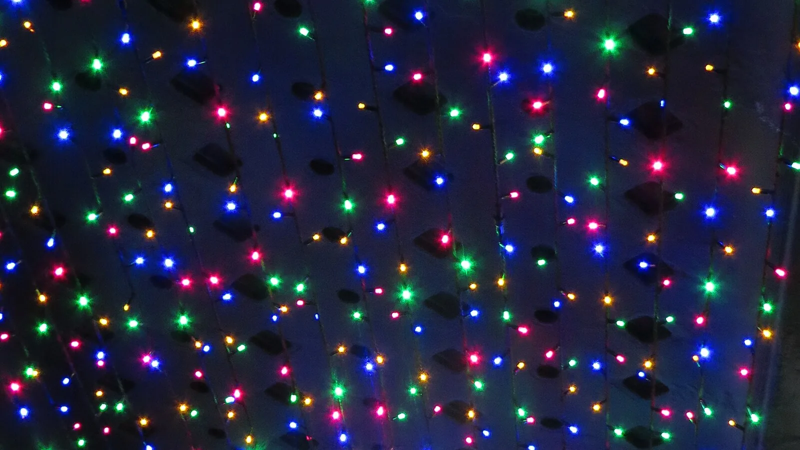
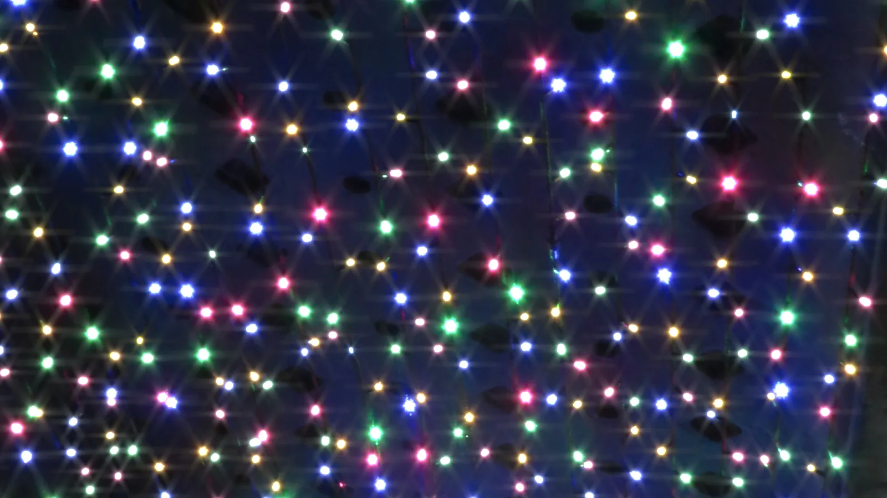
| 項目 | 値 |
|---|---|
| F値 | 16 |
| 画素ピッチ | 4μm |
| カーネル半径 | 63画素 |
| 開口形状 | 正多角形 |
| 線形光 | オン |
| ハイライト閾値 | 90% |
| ハイライト強度 | 12倍 |
設定は作例1と同じ形で、しきい値と強度だけを変えています。「色の扱い」が単色なので、光条は赤、緑、青のどれでも同じ形と長さです。光条の色は、光源の色のままです。
調整
- 光条を短くしたいときは、F値を下げるか、画素ピッチを上げます。
4. 朝露をきらめかせる
日の光を受けた水滴を、小さく明るい光源として扱い、きらめきを足します。
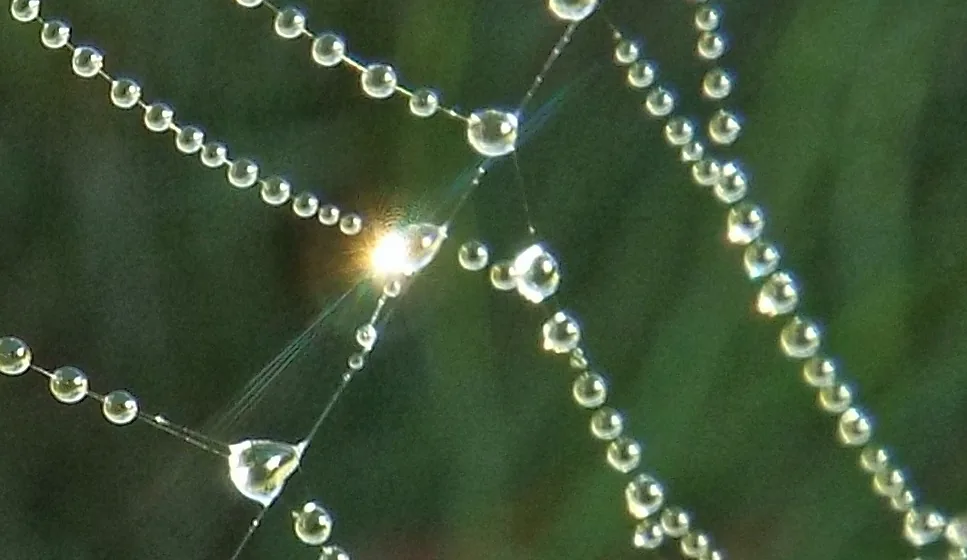
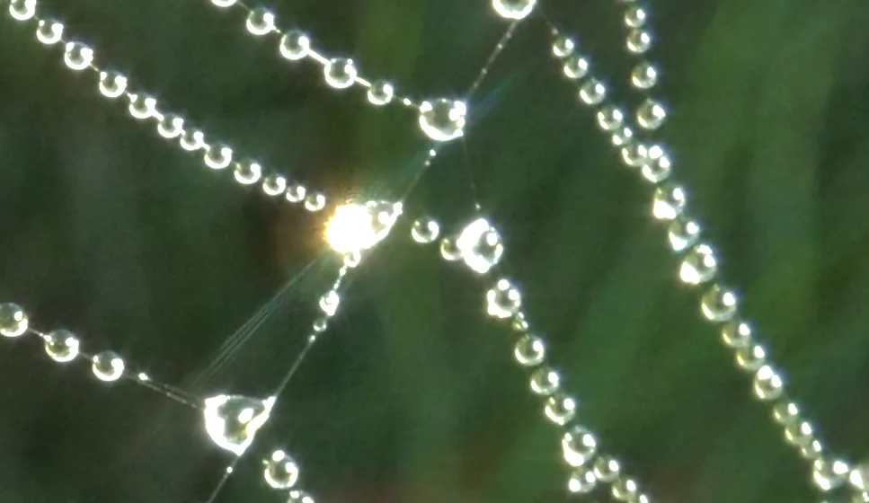
| 項目 | 値 |
|---|---|
| F値 | 16 |
| 画素ピッチ | 4μm |
| カーネル半径 | 63画素 |
| 開口形状 | 正多角形 |
| 線形光 | オン |
| ハイライト閾値 | 80% |
| ハイライト強度 | 8倍 |
水滴の一つ一つが光源になるので、明るい水滴ほど光条が伸びます。しきい値を80%まで下げて、それほど明るくない水滴にもきらめきが乗るようにしています。
5. 細かい電飾を輝かせる
電球が連なった電飾を、一つの光る面のように輝かせます。
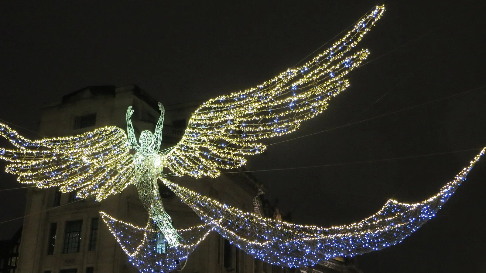
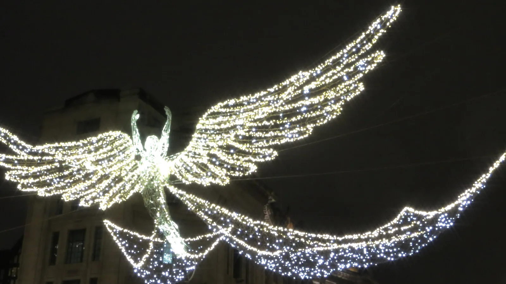
| 項目 | 値 |
|---|---|
| F値 | 16 |
| 画素ピッチ | 4μm |
| カーネル半径 | 63画素 |
| 開口形状 | 正多角形 |
| 線形光 | オン |
| ハイライト閾値 | 97% |
| ハイライト強度 | 10倍 |
電球の数が多いので、一つ一つの光条は見分けられず、隣り合う電球の光が重なって、羽の輪郭が光ってにじみます。持ち上げた分、黄色い電球は白に寄ります。
調整
- 筋として見せたいときは、光源のまばらな素材（作例1と作例3）に適用します。
- 白に寄りすぎるときは、ハイライト強度を下げます。
6. 多角形の玉ボケにする
ピントを外して、光源を玉ボケにします。玉の形は、開口の形と同じになります。


左は開口形状が円形、右は開口形状が正多角形で羽根枚数が7の場合です。
| 項目 | 値 |
|---|---|
| デフォーカス | 3 waves |
| カーネル半径 | 63画素 |
| 品質 | 高精度 |
| 開口形状 | 円形、または正多角形 |
| 羽根枚数 | 7（正多角形のとき） |
| 線形光 | オン |
| ハイライト閾値 | 85% |
| ハイライト強度 | 6倍 |
デフォーカスを大きくすると、点の光は開口と同じ形の円盤に広がります。玉の形は、円形の開口なら丸、7枚羽根の開口なら七角形です。明るい光源の玉は、線形光とハイライトで持ち上げています。
デフォーカスはスライダーの上限の3 wavesです。デフォルトの光学系では、にじみが中心から約46画素まで広がるので、カーネル半径を63画素にして、切り取られないようにしています。品質を高精度にしたのは、大きな波面収差を細かい格子で表すためです。この設定のカーネルは、格子が2048×2048のときとの差が、標準の品質では0.51、高精度では0.03です。差の求め方は設定の選び方にあります。
調整
- 玉の大きさはデフォーカスで決めます。大きさの目安は設定の選び方にあります。
- 玉の形は羽根枚数と開口回転で決めます。枚数を増やすと円に近づきます。
- 玉が重なって濁るときは、ハイライト強度か利得を下げます。
7. 羽根枚数で玉の形を変える
作例6の設定のまま、羽根枚数だけを変えた6枚です。
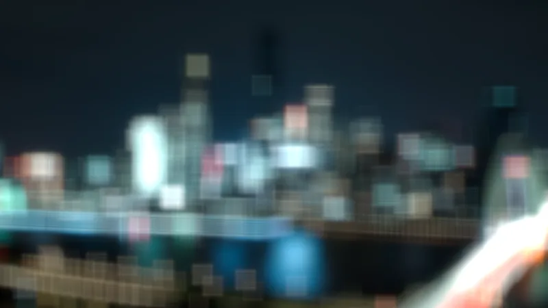
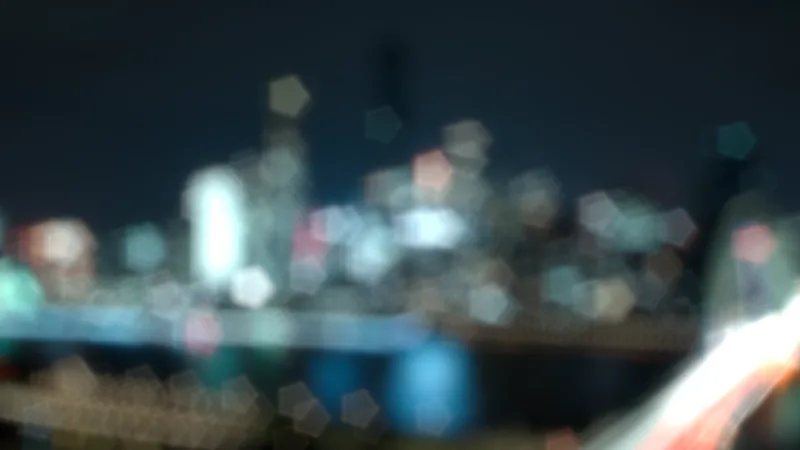
| 項目 | 値 |
|---|---|
| デフォーカス | 3 waves |
| カーネル半径 | 63画素 |
| 品質 | 高精度 |
| 開口形状 | 正多角形（右下だけ円形） |
| 羽根枚数 | 3、4、5、6、8 |
| 線形光 | オン |
| ハイライト閾値 | 85% |
| ハイライト強度 | 6倍 |
3枚は三角形、4枚は四角形というように、枚数と同じ数の辺を持つ玉になります。枚数が増えると円に近づきます。7枚は作例6にあります。
8. 電球を色とりどりの玉ボケにする
小さな電球は、玉ボケにすると丸い光の粒になります。
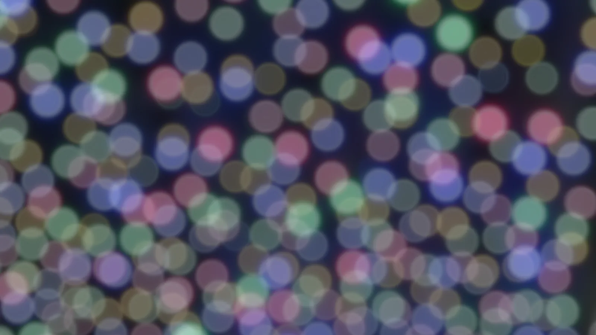
| 項目 | 値 |
|---|---|
| デフォーカス | 3 waves |
| カーネル半径 | 63画素 |
| 品質 | 高精度 |
| 開口形状 | 円形 |
| 線形光 | オン |
| ハイライト閾値 | 85% |
| ハイライト強度 | 4倍 |
光の強さに比例する値で畳み込んでいるので、玉が重なる所では光が足し合わされて明るくなり、色が混ざります。
9. 輪の形の玉ボケにする
中央遮蔽を入れると、玉の中心が抜けて、輪の形になります。
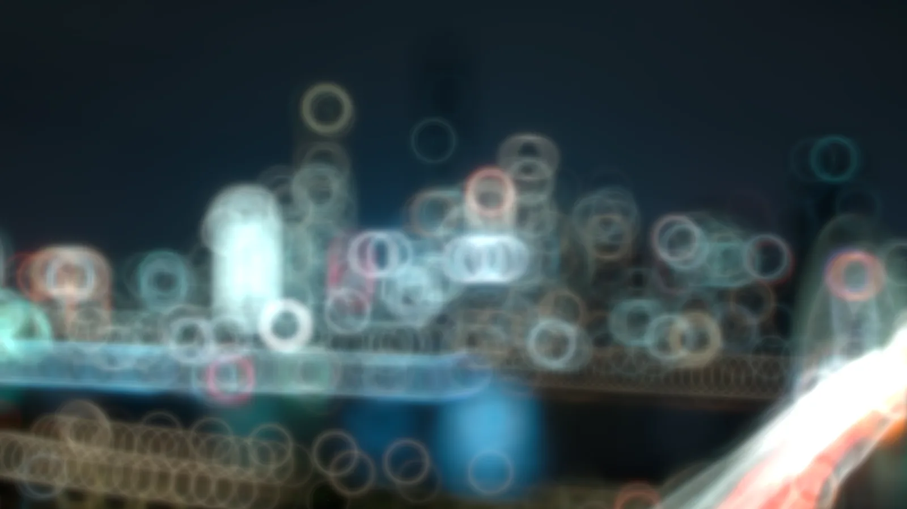
| 項目 | 値 |
|---|---|
| デフォーカス | 3 waves |
| 中央遮蔽 | 0%、または60% |
| カーネル半径 | 63画素 |
| 品質 | 高精度 |
| 開口形状 | 円形 |
| 線形光 | オン |
| ハイライト閾値 | 85% |
| ハイライト強度 | 6倍 |
開口の中心を遮ると、光は外側の輪の部分だけを通ります。玉の形は開口と同じなので、中心の抜けた輪になります。反射望遠レンズのぼけに見られる形です。中央遮蔽の意味はしくみのページにあります。
調整
- 遮蔽を大きくするほど、輪が細くなります。
- 中央遮蔽は0%から95%まで指定できます。
10. ぼけの量を変える
作例6の7枚羽根の開口で、デフォーカスだけを0から3 wavesまで変えた4枚です。
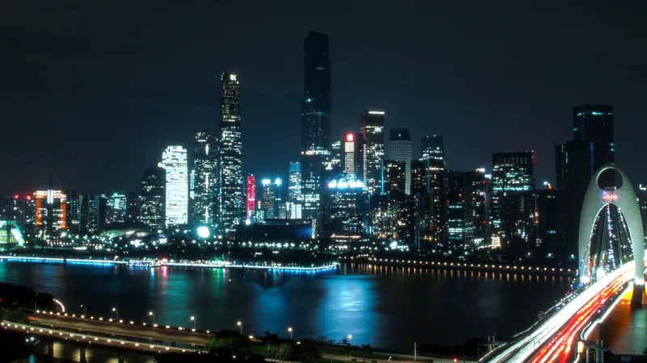
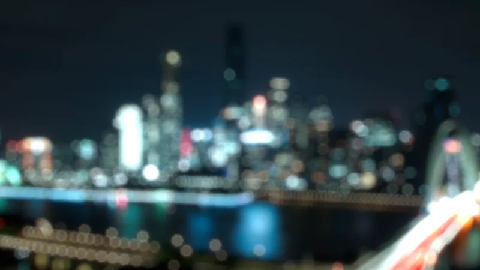
| 項目 | 値 |
|---|---|
| デフォーカス | 0、0.75、1.5、3 waves |
| 開口形状 | 正多角形 |
| 羽根枚数 | 7 |
| カーネル半径 | 63画素 |
| 品質 | 高精度 |
| 線形光 | オン |
| ハイライト閾値 | 85% |
| ハイライト強度 | 6倍 |
デフォーカスはアニメーションに対応しているので、この4枚の間を動画の中で動かせます。画面全体が同じ量だけぼけます。奥行きに応じたぼけではありません。
11. 片側へ尾を引かせる
光源が、片側へ尾を引く彗星のような形になります。

| 項目 | 値 |
|---|---|
| 水平コマ収差 | 1 waves |
| カーネル半径 | 63画素 |
| 品質 | 高精度 |
| 線形光 | オン |
| ハイライト閾値 | 90% |
| ハイライト強度 | 12倍 |
水平コマ収差を正の値にすると、光の芯が右に残り、左へ扇形に広がります。広がった部分に重なるのは、弧の模様です。街灯が並ぶ部分では、矢じりのような形が連なって見えます。
この設定の広がりは、光の90%が収まる半径が約29画素、99%が収まる半径が約45画素で、カーネル半径63画素に収まっています。
調整
- 円形の開口では、符号を反対にすると尾の向きが左右逆になります。計算した広がりを左右反転すると、符号を反対にした広がりと一致することを確かめています。
- 垂直コマ収差にすると尾が縦に伸び、水平と垂直を同時に入れると斜めに伸びます。
- 広がりが大きすぎるときは、F値を下げるか、画素ピッチを上げるか、コマ収差の値を小さくします。
12. 同心円の輪が入った玉ボケ
光源が、同心円の輪の入った玉になります。

| 項目 | 値 |
|---|---|
| F値 | 10 |
| カーネル半径 | 63画素 |
| 品質 | 高精度 |
| 球面収差 | -1 waves |
| デフォーカス | 0.5 waves |
| 線形光 | オン |
| ハイライト閾値 | 92% |
| ハイライト強度 | 8倍 |
球面収差を入れてデフォーカスすると、玉の中に何本かの輪が現れ、中心には小さな明るい点が残ります。
この組み合わせは広がりが大きくなりやすいので、F値を10に下げて、輪がカーネル半径63画素の中に収まるようにしています。収まらないと、玉の周りに薄い四角い縁が出ます。
調整
- 輪の数や間隔は、球面収差とデフォーカスの値で変わります。値を動かして形を探してください。
- 四角い縁が見えたら、F値を下げるか画素ピッチを上げて、広がりを小さくします。
- 球面収差の絶対値を大きくするときは、品質を上げてください。この設定のカーネルは、格子が2048×2048のときとの差が、標準の品質では0.24、高精度では0.03です。
13. 光を縦や横に伸ばす
非点収差を入れると、光が縦や横の線に伸びます。デフォーカスと組み合わせると、向きのそろった楕円の玉ボケになります。
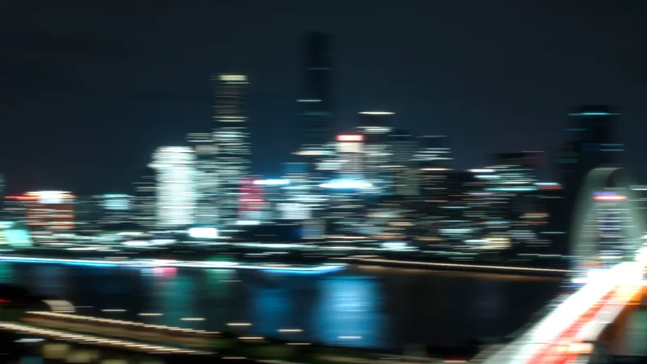
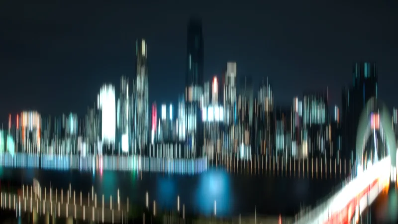
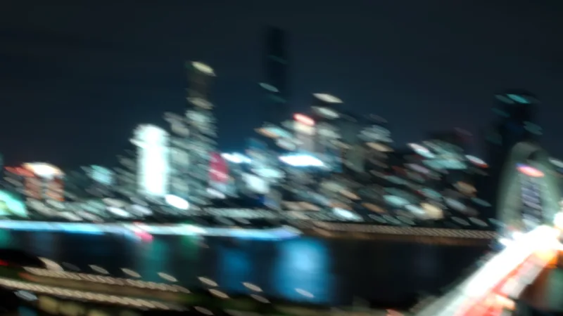
| 項目 | 左 | 中央 | 右 |
|---|---|---|---|
| デフォーカス | 1 waves | 1 waves | 0.75 waves |
| 縦横非点収差 | 1.5 waves | -1.5 waves | 1.2 waves |
| 斜め非点収差 | 0 | 0 | 1.2 waves |
| カーネル半径 | 63画素 | 63画素 | 63画素 |
| 品質 | 高精度 | 高精度 | 高精度 |
| 線形光 | オン | オン | オン |
| ハイライト閾値 | 85% | 85% | 85% |
| ハイライト強度 | 6倍 | 6倍 | 6倍 |
縦横非点収差を正にすると光は横へ、負にすると縦へ伸びます。斜め非点収差を足すと、伸びる向きが斜めになります。中央の縦に伸びた画像では、街灯が縦の細い線になり、ビルの輪郭が縦の筋のように残ります。
調整
- 伸びる長さは、デフォーカスと非点収差の値で変わります。広がりがカーネル半径63画素を超えると、四角い縁が出ます。
14. やわらかい描写にする
輪郭を保ったまま、明るい部分に光がにじむ、やわらかい描写にします。
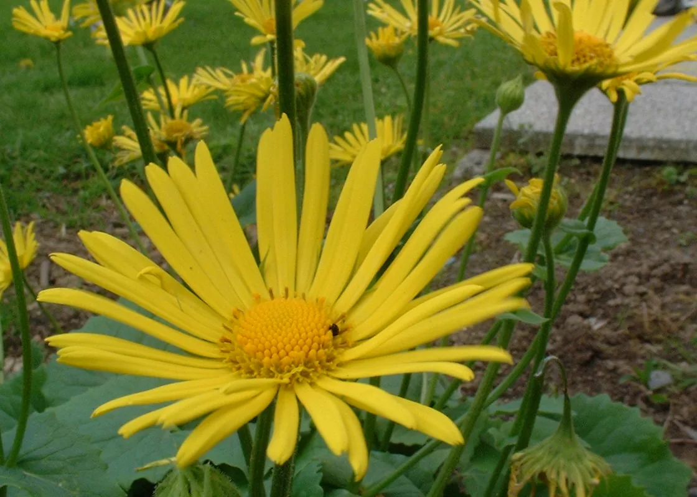
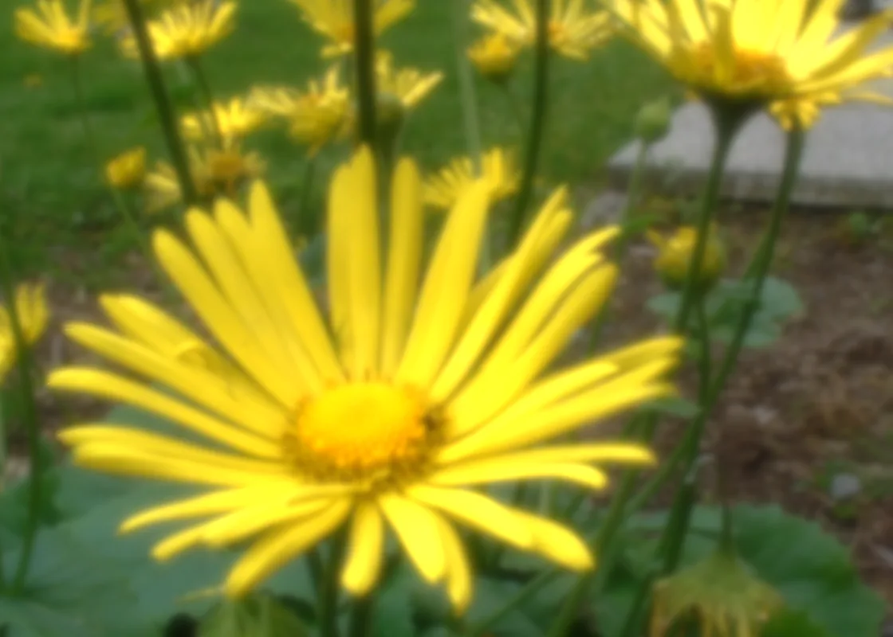
| 項目 | 値 |
|---|---|
| 球面収差 | -0.4 waves |
| カーネル半径 | 63画素 |
| 品質 | 高精度 |
| 線形光 | オン |
| ハイライト閾値 | 60% |
| ハイライト強度 | 4倍 |
球面収差を小さく入れると、光の芯が残ったまま、周りに薄い広がりができます。芯が残るので輪郭は保たれ、広がりが光ってにじんだように見えます。しきい値を60%まで下げて、花の明るい部分を持ち上げています。
調整
- にじみを強くするには、球面収差の絶対値を大きくします。大きくしすぎると、輪郭も崩れます。
15. 光条の縞をなめらかにする
「色の扱い」を変えて、光条の縞の見え方を比べます。
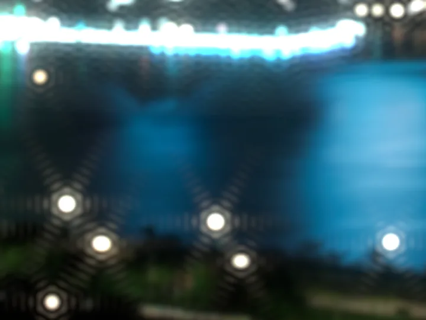
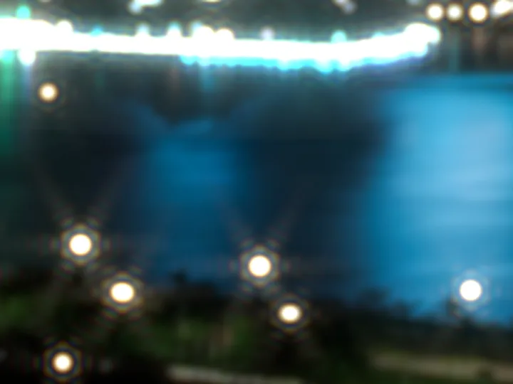
図は、1600×900の結果から、街灯のある360×270画素を切り出して、2倍に拡大したものです。
| 項目 | 値 |
|---|---|
| F値 | 22 |
| 画素ピッチ | 2μm |
| カーネル半径 | 63画素 |
| 品質 | 標準 |
| 開口形状 | 正多角形 |
| 線形光 | オン |
| ハイライト閾値 | 97% |
| ハイライト強度 | 40倍 |
| 色の扱い | 単色、三原色、広帯域 |
F値を22に上げて画素ピッチを2μmに下げているので、回折の縞の間隔が数画素になり、縞が見えます。単色では、光条と街灯を囲む六角形の輪に、濃淡のはっきりした縞が出ます。三原色では、縞の位置が赤、緑、青で少しずつずれるので、縞が弱まり、縁にわずかに色がつきます。広帯域では、帯の中の波長ごとに縞の位置がずれるので、平均すると縞がほぼ消えて、光条がなめらかになります。
調整
- 縞が目立つのは、にじみが小さく、回折の輪が画素に対して大きいときです。F値を上げるか画素ピッチを下げると、縞が見やすくなります。
- 縞をなめらかにしたいときは、広帯域にします。広帯域は、品質を上げるほど変換する波長の数が増えるので、光学系や収差を変えるフレームの計算が長くなります。
- デフォーカスの大きな玉ボケでは、色づきが回折の縁にしか出ません。作例6の円形の開口の設定（デフォーカス3 waves）で試すと、三原色と広帯域でも、単色との差はほとんど見えませんでした。理由はしくみのページの色の扱いにあります。